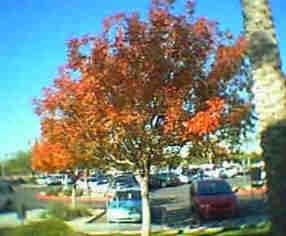

Recovered weblog entry
Autumn, you've been found
Guess what? I found Autumn.

It's residing in this lonely tree, right outside of my apartment complex. I would imagine that this image will be nothing more than ephemeral, as it could be 90 degrees come tomorrow.
Oh, and for any of you who may have realized my mistake of assumption yesterday, I apologize. Apparently, my spellchecker will pass anything with that may be hyphenated. No, really...watch!
Zippy-gyro. (no problems!)
Nike-Reebok. (not an issue!)
Ryan-David. (nice!)
Enough of that. I spent another hour at the mall tonight, and I didn't manage to make much head-way. Or maybe I'm simply writing this so that I can mislead my wife into believing that I didn't purchase anything? Hmm, interesting, interesting. Now all she can do is wonder. (or, she could just ask me...I can't lie to that pretty face of hers)
In other news: Google has finally combed over my site in its entirety. Go ahead, try it! I'll bet you find plenty of random links you didn't even know existed. Gone are the days of defunct links and 404 errors.
Sorry, that's all I have for December 3rd. I'm tired, been up since 6:00am, and I still need to do the laundry. See you tomorrow!